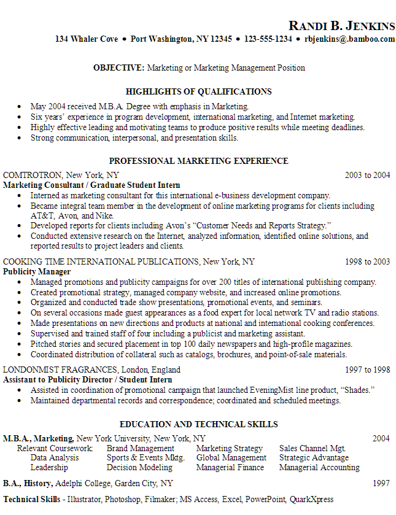
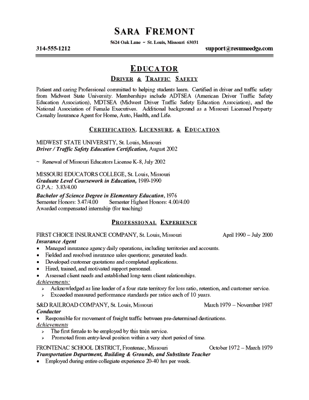
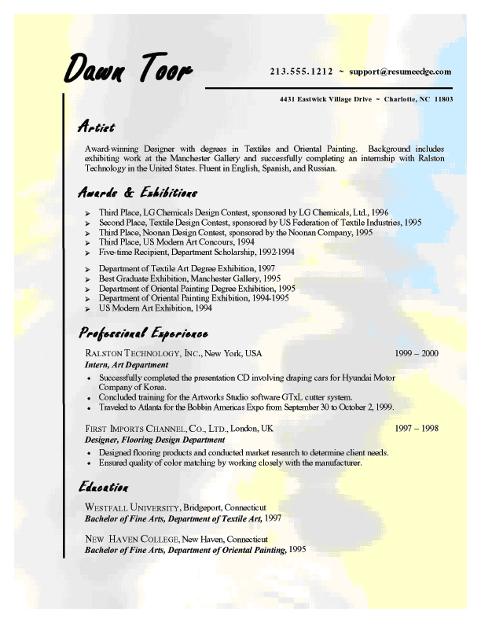
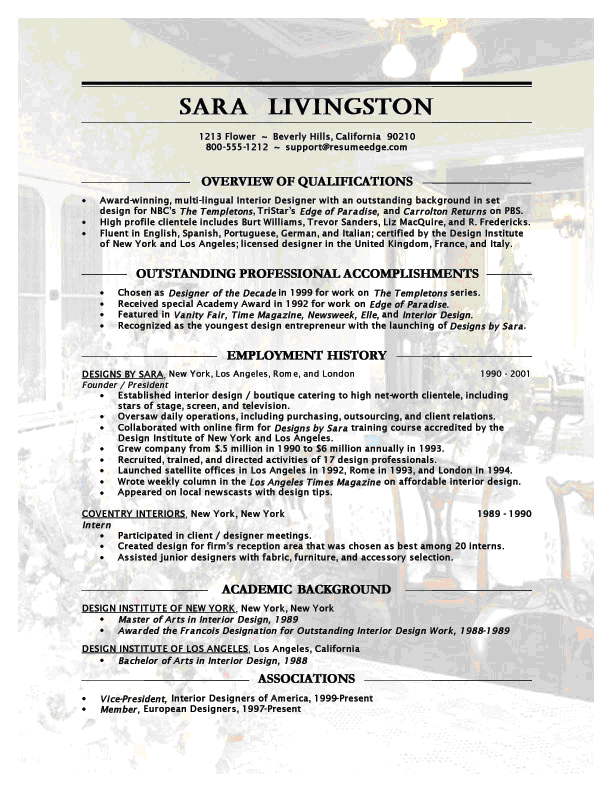
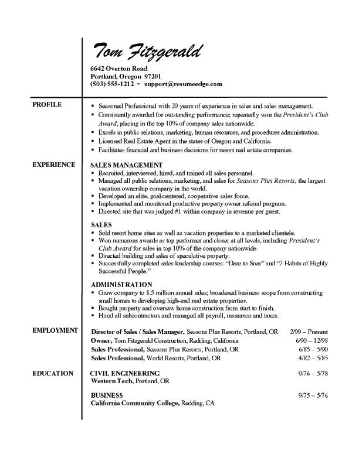

CV
Samples
There are
literally hundreds of different ways you can write a CV and so many
formats you can use, it can be mind boggling. There are a lot of
places on the Internet that can provide you with free templates that
just require you to insert your personal information and then print it
out. But feel free to use a few of these sample CVs that we
like!
If you are
applying for a creative job, it is alright to be creative with your CV,
but not too creative. A professional position, however,
necessitates a professional CV.
Whichever way
you decide to go, be sure to have your CV be eye catching and
intriguing. As we have said, the CV is your first
introduction to your potential employer, so you will want to make the
best first impression that you can right out of the gate.
Do some research
and look for various formats that you can try with your own CV.
There are many, many places on the Internet that offer up
free templates where you can just fill in your own information and you
are on your way.
We were able to
find all sorts of places that offered up CV samples to use as
guidelines to follow when you are typing up your own CV. When
you have a format to follow, it is much easier to make your CV -
and you will be able to tailor the sample to fit your needs.
So, we offer up
to you a few samples for you to consider when crafting a CV.
Take them and use them as if they were your own.




